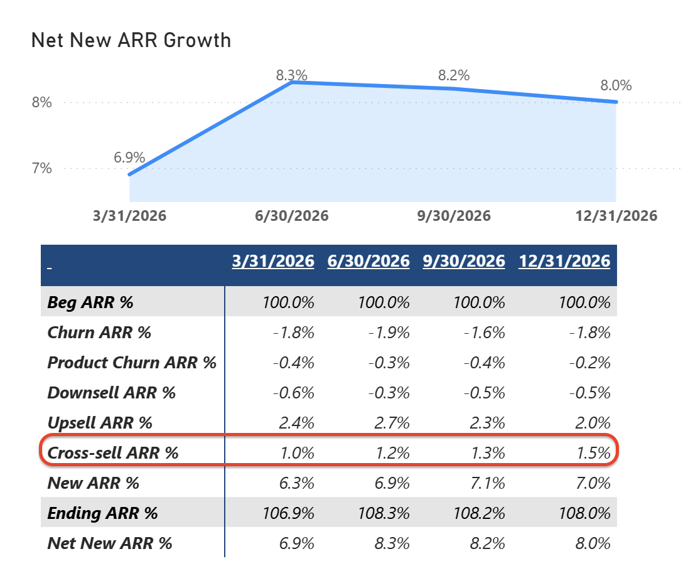
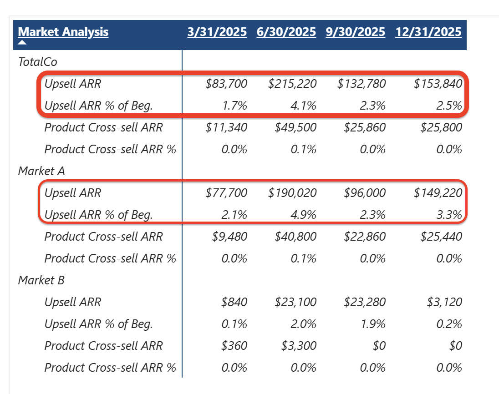
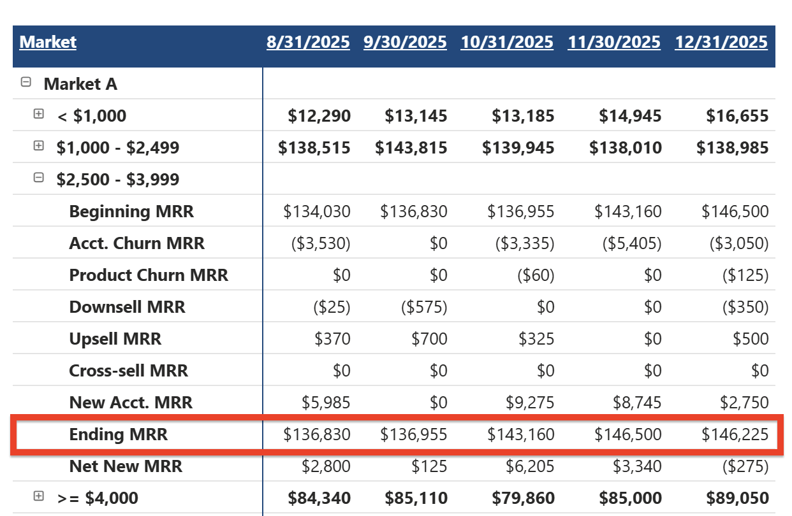
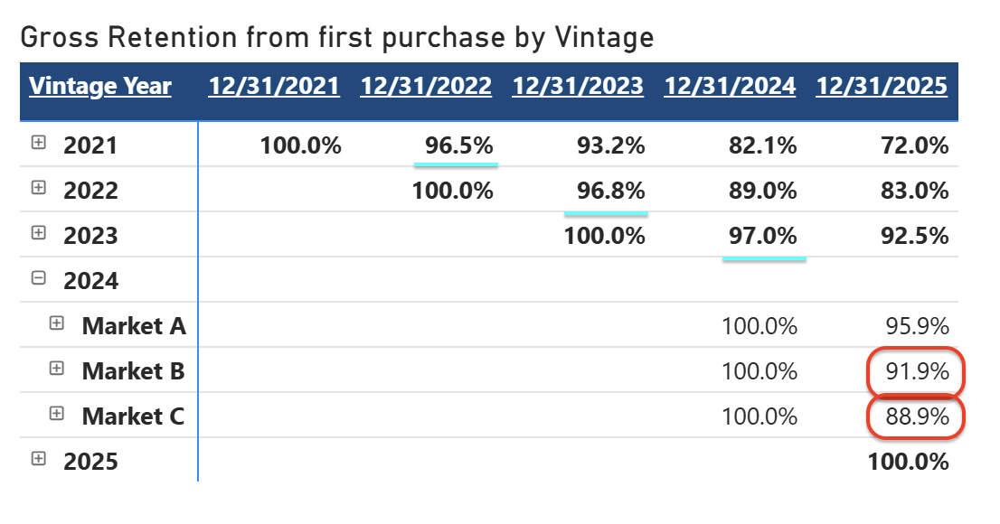
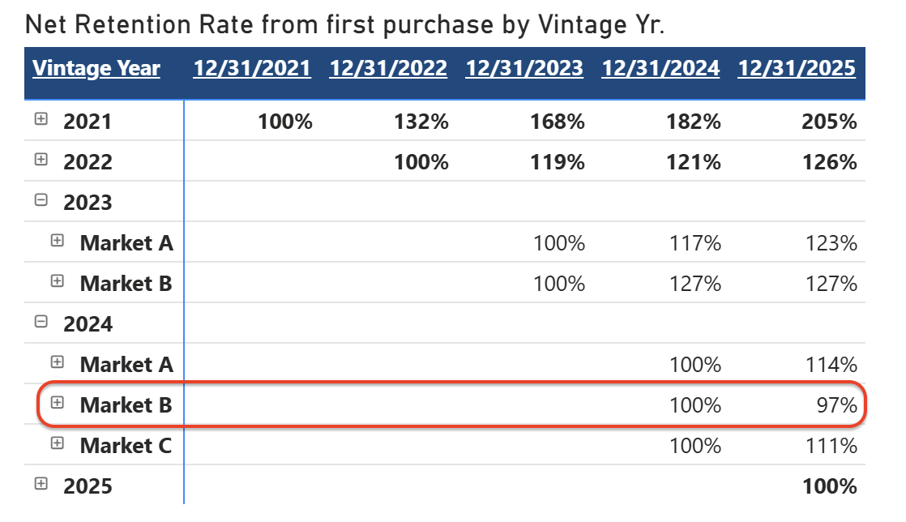
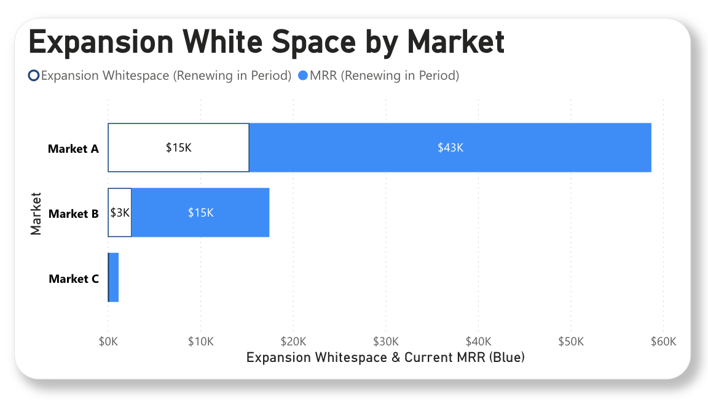
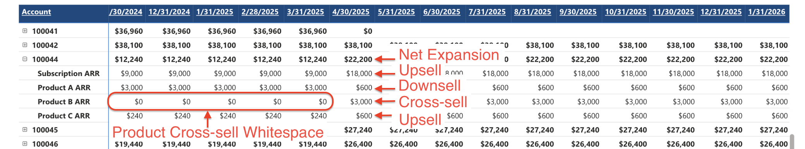

M&A Grade,
Customer Data Cubes
and ARR Snowball
Board Reporting.
M&A-grade ARR clarity for CFOs, CROs, and Operating Partners — built by ex-PwC M&A advisors and AI engineers at a fraction of Big 4 cost.

Built for investors’ questions. Defensible in diligence.
The questions boards and buyers ask in every diligence process, board meeting, and fundraise — answered continuously.
Where is Revenue accelerating?
ARR growth becomes visible when you decompose it into its true drivers: new logos, expansion (upsell vs. cross-sell vs. pricing), and the net impact of contraction and churn. Most reporting shows a single growth number. The ARR Snowball shows exactly what’s moving it.
Boards and investors don’t ask “what’s your ARR?” — they ask where the growth came from, how repeatable it is, and whether the drivers are sustainable. Pacer AI structures your data to answer these questions automatically, every month.

What is driving our expansion ARR?
Expansion ARR comes from four sources: upsell (more of the same product), cross-sell (additional products), seat expansion (more users), and pricing changes. Most reporting lumps these together as “expansion.” Pacer AI separates them at the account-product level so you can see which motions are actually working.
When expansion is broken into its components, you can see whether growth is coming from a pricing increase (one-time) or genuine product adoption (repeatable). That distinction is worth multiples in a diligence process.

Which cohort is our primary business driver?
The largest accounts always get the most attention, but it’s often a middle-of-the-pack cohort that drives the revenue growth of the business. In this example, the $2,500–$3,999 cohort is landing new accounts but very little expansion is occurring.
These are the insights acquirers look for during diligence to find “where there is still meat on the bone.” It’s also what causes most CFOs to say, “I wish I had these insights before diligence.”

How can we improve our Gross Retention?
Gross retention improves when you decompose it into its actual drivers: logo churn, product churn, and downsell. Most reporting lumps these together as “churn,” which hides the root cause. A customer downgrading one product while keeping three others is fundamentally different from a customer leaving entirely.
Pacer AI’s ARR Snowball separates gross retention into its three components at the account-product level. This shows whether retention issues are concentrated in specific products, segments, or cohorts — and whether the problem is fixable (downsell) or structural (logo churn).

How can we improve our Net Retention?
Net revenue retention (NRR) is the balance between expansion and contraction within your existing customer base. It improves when expansion from upsell, cross-sell, and pricing changes outpaces losses from churn, product churn, and downsell. NRR above 110% typically signals strong product-market fit to investors.
Most companies report NRR as a single number. Pacer AI decomposes NRR by cohort, segment, product, and time period — so you can explain exactly what’s driving it up or down. When an investor asks “what happened to NRR in Q3?” you have the answer immediately, not after a two-week data pull.

How much whitespace opportunity is there to sell into?
Whitespace is the gap between what a customer currently buys and what they could buy. Identifying it requires mapping every account against your full product catalog at the product level. Most CRM and FP&A tools can’t do this because they don’t model revenue at the customer × product intersection.
Pacer AI’s Customer Data Cube maps every account against every product, showing exactly where expansion opportunity exists. This turns whitespace from a strategy concept into a queryable dataset that sales, CS, and leadership can act on.

What is Pacer AI?
Pacer AI is an AI-native consulting firm built on a proprietary data transformation platform. We take operational data from CRM, billing, and ERP systems and make it AI-ready — for users, agents, dashboards, and diligence. Founded by ex-PwC M&A advisors, we combine transaction experience with enterprise data engineering and AI agents to make SaaS companies always ready for boards, buyers, and investors.
Built by Will Sullivan, Ex-PwC, West Point graduate.
Over $25B+ in SaaS M&A transactions while in PwC’s TMT Financial Due Diligence and Analytics practice. Built and defended sell-side diligence and conducted buy-side for some of the largest PE funds.
40+ customer data cubes built for advanced GTM sales planning, ARR forecasting, and operationalized for weekly Sales & RevOps cadences.
Proprietary data AI intelligence platform built on Microsoft Fabric, the only Excel-native data warehouse connector, to leverage AI-ready data in Excel with Claude and our trained Analyst Agent.
Solutions to help SaaS companies operate transaction-ready
M&A Grade, Customer Data Cube
Unified, dimensionally-modeled customer data from CRM, billing, and GL. The account × product × period model that makes everything else possible.
ARR Snowball Reporting & Dashboard Package
M&A-grade waterfall analysis with full decomposition. Board-ready Power BI dashboards refreshed at month-close.
Transaction Readiness
QoR, QoE, CDD, TDD
Quality of Revenue, Quality of Earnings, and Tech Due Diligence preparation. Combined diligence package for PE-backed SaaS.
RevOps Transformation
Operationalize ARR intelligence into RevOps workflows. Align sales, CS, and finance around a single source of truth for customer revenue data.
GTM Transformation
Post-merger integration or growth-stage GTM restructuring. Operationalize ARR insights into territory planning and renewal management.
FP&A Transformation
Financial models embedded in Excel with AI Skills. Queryable ARR intelligence in the tool your finance team already uses.
Customer Data Cube
A unified, dimensionally-modeled data asset built from your CRM, billing, ERP, and GL systems. Every downstream report, dashboard, and AI agent depends on this foundation.
- ✓Account × Product × Period dimensional model
- ✓Unified ARR definitions across every stakeholder
- ✓Multi-source data reconciliation (CRM + Billing + GL)
- ✓Real-time streaming to Power BI, Excel, and AI agents
- ✓Built on Microsoft Fabric — your data never leaves your tenant

ARR Snowball Reporting Package
A bundled service — platform, dashboards, and advisory — at 60–85% less than a Big 4 engagement. M&A-grade ARR analysis that is continuously maintained, not a one-time deliverable.
Build the Customer Data Cube
Connect your CRM, billing, and GL data. Build a unified, dimensionally-modeled customer data cube — the single source of truth.
Build M&A-Grade Dashboards
Power BI dashboards with full waterfall: new business, upsell, cross-sell, downsell, product churn, contraction, and price increases.
Stream to Excel + AI
Your ARR data flows into Excel and AI tools — Claude, Copilot — so your team asks questions in plain English.
Transaction-Ready Package
Combined diligence preparation for PE-backed SaaS companies approaching a transaction. Delivered in partnership with Veach.Co for Quality of Earnings.
Quality of Revenue
M&A-grade ARR decomposition, cohort analysis, retention metrics, and revenue quality scoring that withstands buy-side scrutiny.
Quality of Earnings
Financial normalization, EBITDA adjustments, working capital analysis, and earnings quality assessment. Delivered with Veach.Co.
Tech Due Diligence
Architecture review, scalability assessment, tech debt quantification, and infrastructure cost analysis for informed valuation.
Accelerating Revenue Maturity
From founder instincts to demonstrated revenue mastery through segmented revenue motions.
Instinct Led
Founder-led, warm network, existing customer care. Revenue comes from relationships, not process.
Quota Led
Hired sales team, selling beyond warm network. Customer acquisition and activation as functions.
Market Led
Seller profiles matched to buyer profiles. PLG companies align packaging and pricing to segments.
Motion Led
Purpose-built infrastructure per motion, not just segmentation.
Revenue Motion Led Pacer AI
Demonstrated ability to increase ARR Growth and NRR by Market Segment and motion.
Trusted by PE-backed SaaS leaders
Frequently Asked Questions
What size companies do you work with? +
Pacer AI is purpose-built for PE-backed B2B SaaS companies at $50M to $1B ARR. This is the range where ARR Snowball analysis has the highest impact on valuation and where internal teams typically lack the resources to build M&A-grade reporting infrastructure.
How long does the initial setup take? +
The Customer Data Cube typically takes 4–8 weeks to build, depending on the number of source systems and data complexity. Once the foundation is in place, ARR Snowball reports are generated automatically at each month-close.
What systems do you connect to? +
Pacer AI connects to Salesforce, HubSpot, Stripe, Chargebee, Zuora, NetSuite, Sage Intacct, and other CRM, billing, and ERP systems. Built on Microsoft Fabric, your data never leaves your tenant.
How is this different from FP&A tools like Vena or Planful? +
FP&A tools are built for budgeting, forecasting, and consolidation. Pacer AI is purpose-built for M&A-grade ARR decomposition — separating upsell, cross-sell, downsell, product churn, and logo churn at the account-product level. 95% of FP&A tools don’t provide queryable insights below the account level.
What does pricing look like? +
Pricing is performance-aligned: 5 basis points (0.05%) of revenue under analysis for a 6-month engagement, or 4 basis points (0.04%) for a 12-month commitment — a 20% discount. Customer Data Cube implementation is a one-time fee starting at $25k. Contact us for specific pricing based on your data complexity and scope.
Do you work with PE funds directly? +
Yes. We work with portfolio operations teams to standardize ARR reporting across their portfolio companies, providing a single pane of glass for ARR quality across all investments.
Stop preparing for diligence.
Be ready for it.
Schedule a 30-minute conversation. We’ll show you what M&A-grade ARR reporting looks like with your data.